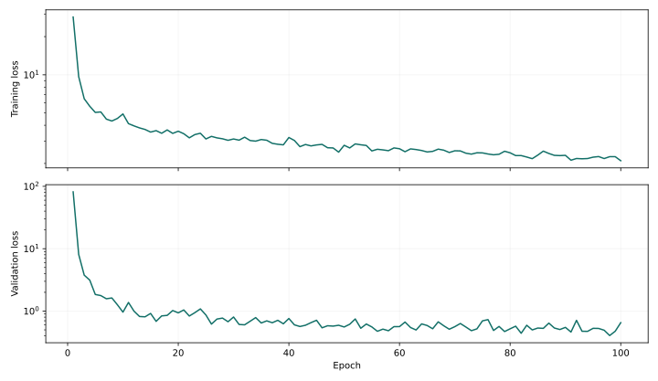
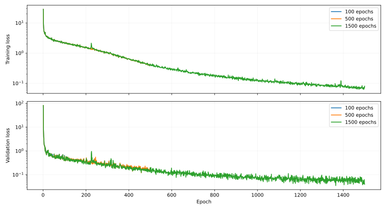

成功示范
专家成功示范，用于观察夹取位置、闭合时机、垂直抬起和敲击姿态。
4.2 秒 · 原始评估视频 下载 MP4
本文用于记录我使用 RoboTwin 2.0 采用ACT完成这条训练—执行—评测链路的过程，也展示过程中走过的弯路。
RoboTwin 2.0 基于 SAPIEN 仿真平台开发，提供 50 个双臂任务的自动化数据合成与统一评测系统，并已开源 10 万条以上预采集轨迹。在仿真中执行任务，记录相机图像、机器人状态和动作。官方介绍
ACT（Action Chunking with Transformers） 是模仿学习策略。它读入当前图像和关节状态，一次预测一段未来动作；执行时结合新的观测继续预测。
本次选取 beat_block_hammer任务：机器人抓住锤子，稳定抬起，移动到木块上方，最后下移并完成敲击。demo_clean 表示不额外加入复杂场景随机化的测试设置；joint 表示用关节与夹爪控制值作为动作。
| 实验要素 | 设置与含义 |
|---|---|
| 机器人 | Aloha-AgileX 双臂机器人；本地 action profile 为 aloha_agilex
|
| 训练数据 | 该任务的 50 段示范，共 5682 个采样时刻 |
| 视觉输入 | 头部与左右手腕三路 RGB，训练图像为 640×480 |
| 动作输出 | 14 维：左右机械臂各 6 维，左右夹爪各 1 维 |
本次实验目标是跑通一个任务的训练流程，而不是复现全部 50 个任务的 benchmark。
| 组件 | 版本 / 作用 |
|---|---|
| Ubuntu / kernel | 24.04；7.1.0-070100-generic |
| GPU / driver | NVIDIA GeForce RTX 5070，12 GB；580.178.04 open |
| Python / Conda | Python 3.10；Miniforge 管理独立 RoboTwin 环境 |
| PyTorch / TorchVision | 2.7.1+cu128 / 0.22.1+cu128 |
| CUDA Toolkit | 12.8.1；供 GPU 扩展编译使用 |
| SAPIEN / MPLib | 3.0.0b1 / 0.2.1；物理、渲染与运动规划 |
| CuRobo / Warp / PyTorch3D | 0.7.8 / 1.12.0 / 0.7.8；GPU 规划与几何计算 |
| NumPy / SciPy | 1.26.4 / 1.10.1；保留兼容版本 |
显卡兼容是安装时的核心问题。没有照搬 ACT 的 install.sh，因为其固定安装 torch==2.4.1，会替换本机已验证的 CUDA 12.8 构建。采用约束文件补装缺失依赖，安装前后已有包的版本不变，pip check 通过。
渲染过程中，SAPIEN 自带 OIDN 出现 unsupported device type: CUDA。使用 ROBOTWIN_RT_DENOISER=optix 和 envs/_base_task.py 的配置读取逻辑改用 OptiX。官方资产约 16 GB；完成 CUDA 运算、PyTorch3D、CuRobo、相机和锤子任务场景验证后才进入训练。
source /home/leo/Documents/Codex/2026-10-08/7-0-7-1/outputs/activate-robotwin.sh工具方面，安装 PyCharm 作为 IDE，绑定 RoboTwin 的 Python interpreter；安装 MPV 查看 MP4，HDFView 查看 HDF5 内部结构。项目文件位于 outputs/RoboTwin/，不是 IDE 自身的安装目录。
保留 PyTorch/CUDA 的核心组合，补充 einops==0.8.1、rospkg==1.5.1、mujoco==2.3.7、dm-control==1.0.14，并对 ACT 的 detr/ 做本地 editable install。MuJoCo 和 dm-control 属于原始工具链依赖；本次任务仿真仍由 SAPIEN 提供。
本次使用本机已下载的 50 段示范，原始示范位于 data/demo_clean/beat_block_hammer/aloha_agilex/。检查 HDF5 后发现，其 state、action、vision 字段已经兼容共享工具，主要问题是目录入口不同。转换器增加 --raw-dir，无需重写原始字段或移动原始文件。
通过共享的 pack_robot_state 组织动作，通过 decode_image_bit 解码 RGB，逐帧调整为 640×480 并采用 LZF 无损压缩保存。结果共约 3.2 GiB。训练器按默认比例划分 40 段 training 和 10 段 validation。
| ACT HDF5 字段 | 形状 / 含义 |
|---|---|
action |
T × 14，目标动作 |
observations/qpos |
T × 14，关节状态 |
observations/images/<camera> |
T × 480 × 640 × 3，RGB 图像 |
数据加载器原来没有读取仿真标记，会按实机方式取 action[t-1:]。转换文件增加 sim=True，utils.py 对仿真数据使用 action[t:]，避免时序错位。所有原始文件 SHA256 未变化，状态与动作逐项一致，抽查的 RGB 帧一致。
ACT 在 RTX 5070 上完成合成输入的 optimizer step；真实示范 batch_size=2 的 forward/backward 也通过，峰值分配显存约 1782.7 MiB。这个数值是验证时的张量分配峰值，不等于完整训练或双进程评测的总显存。
source /home/leo/Documents/Codex/2026-10-08/7-0-7-1/outputs/activate-act.sh
bash process_data.sh RoboTwin beat_block_hammer aloha_agilex joint \
--raw-dir /home/leo/Documents/Codex/2026-10-08/7-0-7-1/outputs/RoboTwin/data/demo_clean/beat_block_hammer/aloha_agilex在等待长时间训练前，先运行 3 epochs。epoch 指把训练集遍历一轮；这次短实验只验证数据读取、参数更新、模型保存和重新加载，不用于判断机器人是否已经学会敲击。
训练完成后生成 dataset_stats.pkl 和 policy_last.ckpt。前者保存输入、输出的数值统计，后者保存模型权重。严格加载返回 All keys matched successfully，预测形状为 (1, 50, 14)：一份观测对应 50 个未来动作，每个动作有 14 个控制值。
为了看清后续训练是否有效，在 imitate_episodes.py 中增加逐轮日志和 metrics.csv。train_loss 是学习样本上的预测误差，val_loss 是验证样本上的误差；数值越低通常表示更接近示范，但只有实际执行成功，才能说明任务能力得到验证。
| 参数 | 本次固定设置 | 初学者可以怎样理解 |
|---|---|---|
batch_size |
2 | 每次拿两份样本更新参数 |
lr / lr_backbone |
1e-5 / 1e-5 | 参数每次调整的幅度 |
chunk_size |
50 | 一次预测的动作段长度 |
hidden_dim / dim_feedforward |
512 / 3200 | 模型内部表示与网络容量 |
enc_layers / dec_layers / nheads |
4 / 7 / 8 | Transformer 的结构 |
kl_weight / backbone / seed |
10 / ResNet18 / 0 | 损失权重、视觉骨干与随机设置 |
后续实验只改变训练轮数，保持这些设置一致。每次从头训练并保存到新目录；它们不是接着上一次模型继续训练。训练启用 Dropout，验证关闭 Dropout，并且采样时刻随机，因此两种 loss 的绝对值不宜直接互相比较，重点看趋势和执行视频。
短训练和模型加载通过后，开始 100 epochs 实验，并进入仿真观察实际动作。
机器人能接近锤子，但没有完整完成任务。
专家成功示范，用于观察夹取位置、闭合时机、垂直抬起和敲击姿态。
人工观察：机械臂向内弯曲，短暂夹取后锤子掉落；后续向木块移动不精准。
100 epochs 后，train_loss 约为 2.10，val_loss 约为 0.65。数值已经比训练初期低，但三次仿真全部失败。这个反差提醒我们：模型在数据上“更像示范”，并不等于在环境中可以连续完成整个动作。

人工核查从视频入手。 将成功示范和失败执行半速播放，观察到机械臂向内弯曲，而不是像示范那样垂直抬起。短暂夹住后锤子掉落，之后也未精准接近木块。
这里优先处理最早出现的问题。锤子掉落后，机器人看到的场景已经不同于成功示范，后续移动偏差可能是前段失败的连锁反应，不宜立即归因于独立的定位问题。
随后核对动作顺序、夹爪开合与反归一化逻辑，没有发现明显不一致。同时考虑到误差已有明显下降，合理推测是训练论次不足导致。
初步决定扩大训练轮数，进行 500 epochs 对照实验。保持数据、学习率、batch size 和部署设置一致，观察增加训练是否改善抓取与抬起。
但抓取与持握已有明显改善。阶段性动作进步与最终成功率应分开记录。
人工观察：机械臂向内弯曲，短暂夹取后锤子掉落，后续向木块移动不精准。
人工观察：弯曲和掉落改善，能持锤到木块上方，但未完成有效下移与敲击。
500 epochs 使用相同数据与配置，从头训练。最后一轮 train_loss 约为 0.41、val_loss 约为 0.18，均低于 100 epochs 的结果。更重要的是，视频中向内弯曲和锤子掉落的问题改善，机器人已经能持锤移动到木块上方。

虽然三个回合仍未成功，但失败阶段已经改变，不再主要卡在拿稳锤子，而是停留在木块上方，没有完成最后的下移与敲击。因此，本阶段有较好的动作改善证据。
继续采用增加训练轮数的策略，开展 1500 epochs 实验，并保持其余参数不变，重点观察最终下移和有效敲击是否出现。
首次完整完成抓取、持握、移动和有效敲击。
人工观察：弯曲和掉落改善，能持锤到木块上方，但未完成有效下移与敲击。
首次 3 回合测试全部成功。本片展示完成抓取、移动和最终敲击的过程。
1500 epochs 后，train_loss 约为 0.0803，val_loss 约为 0.0400。首次三个测试回合全部成功，表明这条策略链路已经完成了实际任务；相比只看模型加载和输出形状，这一步真正验证了动作可以在环境中执行。

| 训练阶段 | train_loss | val_loss | 3 回合结果 |
|---|---|---|---|
| 100 epochs | 2.1028 | 0.6522 | 0/3 |
| 500 epochs | 0.4142 | 0.1829 | 0/3 |
| 1500 epochs | 0.0803 | 0.0400 | 3/3 |
小样本成功后，需要扩大评测。 固定 1500 epochs 的 policy_last.ckpt 和 temporal_agg: true，使用一组新的场景入口 seed=1 运行 20 回合 demo_clean （无域随机化的干净场景）评测。400 步条件下成功 15 次，即 75%。15 个成功回合在 82～114 步完成，五个失败回合都运行到 400 步。
人工查看失败视频发现：机械臂已经接近木块，但下落时反复调整位置，没有稳定完成敲击。所有失败都显示 400/400，合理怀疑400步数上限可能阻碍了实验完成。但步数达到上限既可能表示仍在缓慢推进，也可能表示一直在重复无效动作。
提出“执行预算不足”的假设。暂不重新训练，固定模型和其余设置，只把 evaluation step limit 从 400 提高到 800，单独检验额外时间能否挽救原来的失败场景。
这一方案改变的是仿真允许执行的动作次数，不是训练 epoch。下一节展示这个诊断实验的结果。
seed=200001；原始 400 步条件下失败，人工观察为下落时持续调整定位。
seed=200001；延长到 800 步仍失败，用于区分时间预算与定位能力。
先停止服务，备份 _eval_step_limit.yml，仅把 beat_block_hammer: 400 改成 800。模型权重、训练设置、场景配置、入口 seed 和测试次数不变；日志另存为 eval20-seed1-800-client.log，避免覆盖原始结果。
结果为 14/20。人工观察：失败案例仍在下落中持续调整定位，未因额外时间获得有效敲击。结论是“单纯增加执行预算未解决当前问题”，不是“800 步让模型变差”。
| 共有失败场景 seed | 400 steps success | 执行步数 | 800 steps success | 执行步数 |
|---|---|---|---|---|
| 200001 | False | 400 | False | 800 |
| 200010 | False | 400 | False | 800 |
| 200023 | False | 400 | False | 800 |
差异来自专家筛选和场景初始化过程的实际结果；相同入口 seed 不能替代按具体场景 seed 对齐。75% 与 70% 只差一个回合，且场景集合不同，不适合据此推断性能下降。这两个数字应分别作为原设置评测与延长预算诊断的结果，而非一组完全相同场景上的配对总分。两段对照视频选取共同的 seed=200001。
以下为本次执行方式的摘要。运行前需先激活环境；训练入口不会自动恢复旧模型。全部实验使用独立的 checkpoint 目录，避免混淆训练阶段。
source /home/leo/Documents/Codex/2026-10-08/7-0-7-1/outputs/activate-act.sh
export CUDA_VISIBLE_DEVICES=0
export ACT_ACTION_DIM="$(bash ../../utils/get_action_dim.sh "$(cd ../../.. && pwd)" aloha_agilex)"
python -u imitate_episodes.py \
--bench_name RoboTwin --task_name beat_block_hammer \
--ckpt_setting RoboTwin-beat_block_hammer-aloha_agilex-joint \
--ckpt_dir "$ACT_RUN_DIR" --policy_class ACT \
--kl_weight 10 --chunk_size 50 --hidden_dim 512 \
--batch_size 2 --dim_feedforward 3200 \
--num_epochs 1500 --lr 1e-5 --save_freq 250 --seed 0底层相关源文件也以英文原名附在 source/：envs/_base_task.py、_eval_step_limit.yml、scripts/eval_policy.sh、setup_eval_policy_server.sh 和 setup_eval_env_client.sh。步数配置快照确认已恢复为 400。
本节供希望复现的读者查阅，不必在首次阅读时逐项执行。附件保留了实操时的路径，换电脑时需按自己的工程位置替换。
评测固定 --task_config demo_clean --test_num 20 --seed 1 --frequency 15，日志与权重目录关联。500/1500 训练目录的原始名称和媒体来源保存在附件与 media-manifest.json。
| 源文件（英文原名） | 本次作用 / 改动 |
|---|---|
| activate-robotwin.sh | 激活 Conda、CUDA、GCC、OptiX；进入 RoboTwin |
| activate-act.sh | 复用环境并进入 ACT |
| install-act-rtx5070.sh | 检查兼容版本，使用 constraints 安装 ACT extras |
| detr/process_data.py | 输入路径、逐帧转换、压缩、sim 标记、来源校验 |
| utils.py | 读取 sim 属性，保证仿真 action[t:] 对齐 |
| imitate_episodes.py | 模型训练、metrics.csv、checkpoint 保存 |
| train.sh | 工作目录和遇错停止；默认长训练没有用于本次分阶段命令 |
| deploy.yml | ACT 模型与部署参数，temporal_agg 保持 true |
| TASK_CONFIGS.json | 训练数据位置、camera names 和 episode 数量 |
| detr/act_policy.py | 模型输入归一化、时间聚合与输出反归一化；保留原实现 |
关键原始记录：nvidia-repair.log · act-data-verification.json · act-gpu-verification.json · 1500 epochs metrics.csv · 400 steps trials.csv · 800 steps trials.csv。附件是记录快照，原始工程文件未因生成此报告而修改。